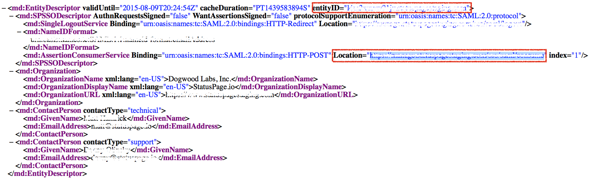
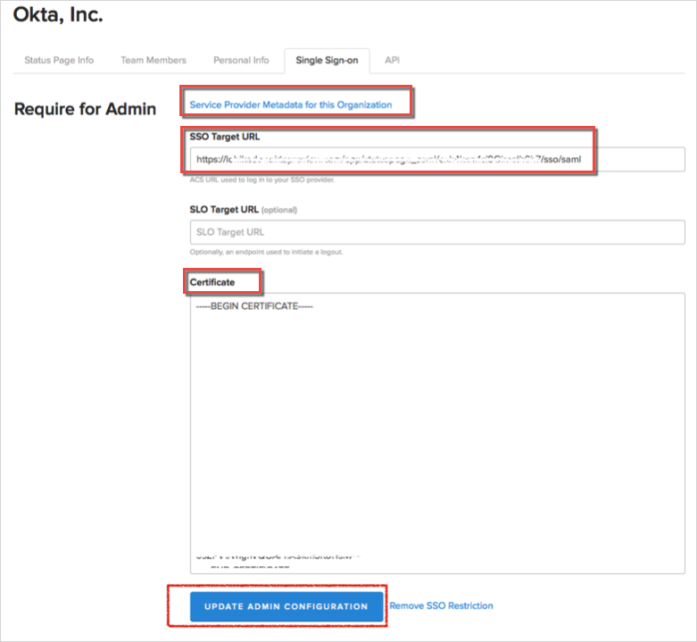
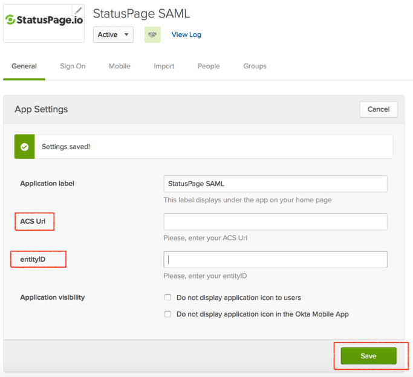

Log into you StatusPage.io account.
In the top right corner, first select your email, then select Manage Account from the dropdown menu.

Select the Single Sign-on tab, then in the Require for Admin section, enter the following (see screen shot at end of step for reference):
Click on Service Provider Metadata for this Organization to view StatusPage.io metadata. Make note of StatusPage.io’s entityID and ACS url, which are both in the metadata file, for example see below:

SSO Target URL: Copy and paste the following:
Sign in to the Okta Admin app to have this variable generated for you.
Certificate: Copy and paste the following:
Sign into the Okta Admin Dashboard to generate this variable.
Click UPDATE ADMIN CONFIGURATION.

In Okta, select the General tab for the StatusPage app:
Enter the StatusPage.io’s UCS Url and entityID you made note of in step 3.
Click Save.

Done!
Notes:
IdP-initiated flows and SP-initiated flows are supported.
Just In Time (JIT) Provisioning is not supported.